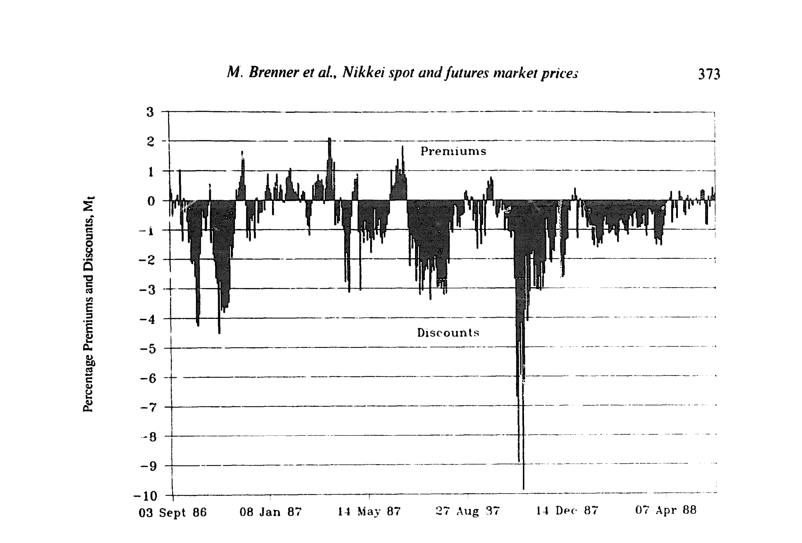
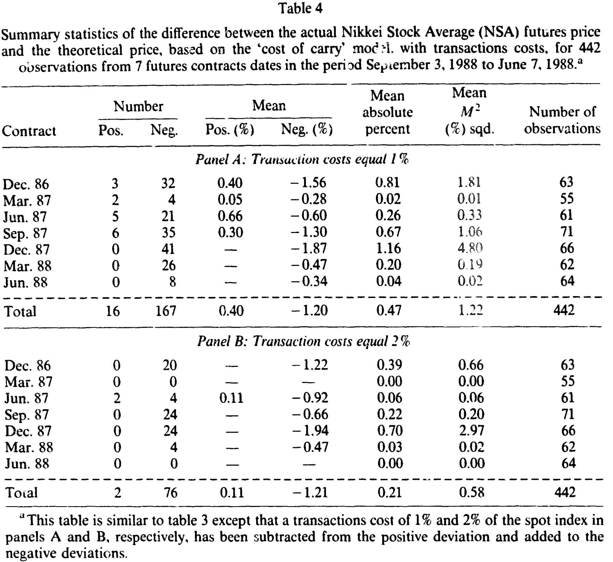
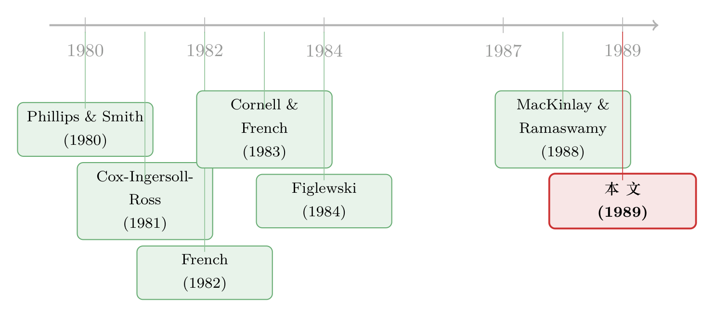

新加坡的期货，东京的股票：一道跨国界的「便宜」之谜
本文读的是 Brenner, Subrahmanyam & Uno (1989, Journal of Financial Economics)：日经 225 指数（NSA）的股票在东京交易、它的期货却在新加坡交易；自 1986 年开市以来，这份期货长期低于「持有成本」模型给出的理论价，平均折价约 -1.39%。交易成本与卖空限制能解释一部分，而这种错误定价像美国早年那样，正随时间慢慢收敛。
1 一道被「分」在两个国家的套利题
先想象一件在教科书里几乎不可能发生的事。
一份股指期货，它的标的——日经股价平均指数 (Nikkei Stock Average, NSA) 所代表的 225 只股票——在东京证券交易所 (Tokyo Stock Exchange, TSE) 交易；而期货本身，却挂在另一个国家：新加坡国际金融交易所 (Singapore International Monetary Exchange, SIMEX)。1986 年 9 月 3 日，这是历史上第一次，一个指数的现货与它的衍生品，分属两片不同的法域、两套不同的交易制度、甚至两个不同的时区。
这件事为什么值得一篇 JFE？作者给了几个理由：东京当时已是全球市值与成交量最大的股票市场；NSA 约占 TSE 全部股票市值的一半；而最有意思的，是这种「现货在 A 国、期货在 B 国」的天然割裂，恰好为「市场摩擦如何侵蚀市场效率」提供了一个干净的观察窗口。
按照无套利的直觉，这道题本不该有谜面。期货价格应当紧紧咬住现货——一份期货，无非是「今天借钱买下指数、持有到期、其间收些股利」这套复制策略的影子。可数据一摆出来，谜面就出现了：这份期货，从开市那天起就持续地卖得比它「该有的价钱」便宜。
一个自然的问题是：便宜，便宜多少？又是为什么？
2 那把丈量「便宜」的尺子：持有成本模型
要说一样东西「贵了」还是「便宜了」，先得有一个理论价。作者用的是任何或有权益都适用的老办法——构造一个复制组合：在无套利市场里，期货价格等于「把现货扛到到期日」的成本。对股指期货而言，这个扛货成本就是利息减去期间收到的股利。
具体地，论文给出理论期货价格（式 1）：
$$FP_t = S_t \exp(r\tau) - D^k_t$$
这里 \(S_t\) 是现货指数，\(r\) 是无风险利率，\(\tau = (T-t)/365\) 是到期前的年化时间，\(D^k_t\) 则是期间所有股利在到期日 \(T\) 的终值。我们把它拆开来看一眼：
直觉很朴素：你今天买现货、借钱付账、持有到期，期间股利替你减轻了一点负担。期货无非是这套动作的「打包价」。
但真实世界里没有免费的复制。一旦把交易成本算进去，无套利就不再是一条线，而是一条带——带内的偏离不足以覆盖套利成本，于是无人出手。论文列出了套利要付的六项成本：买卖股票的佣金、证券交易税、股票的市场冲击、期货的市场冲击、期货佣金，以及——这一项后面会变成全文的主角——卖空时「借股票」的成本。于是无套利上下界变成（式 2）：
$$FP_t^{+} = \{S_t(1+c_+)\}\exp(r\tau) - D^k_t$$ $$FP_t^{-} = \{S_t(1-c_-)\}\exp(r\tau) - D^k_t$$
其中 \(c_+\)、\(c_-\) 是买入与卖出方向的总交易成本。只有当实际期货价 \(F_t\) 冲出这条带，套利才有利可图。落在带内的「错误定价」，则计为零（式 6）：
$$M_t = \frac{F_t - FP_t^{+}}{FP_t^{+}} \quad \text{if } F_t > FP_t^{+}$$ $$M_t = \frac{F_t - FP_t^{-}}{FP_t^{-}} \quad \text{if } F_t < FP_t^{-}$$
除了用百分比偏离来度量，作者还备了第二把尺子：隐含利率。如果你买现货、卖期货锁定收益，这套组合内含一个回报率，把它倒推出来（式 4）：
$$R_t = \frac{1}{\tau}\,\ln\!\left[\frac{F_t}{S_t(1+c) - PV(D)}\right]$$
再拿这个 \(R_t\) 去和真实的短期利率比。若隐含利率高于借钱利率，就该「卖现货、买期货」把利差锁进口袋；反之则反向操作。两把尺子，量的是同一件事的两个侧面。
3 数据：东京的收盘价，新加坡的结算价
接着，把尺子架到数据上。
样本期是 1986 年 9 月 3 日到 1988 年 6 月 7 日，覆盖 7 个到期合约（每年 3、6、9、12 月到期），共 442 个交易日的观测。利率用的是三个月期 Gensaki 利率（一种回购利率，在日本扮演着美国国库券的角色），它在样本期内从约 4.7% 一路降到 3.8%。
这里藏着一个东京特有的细节，也是论文标题里「prices behavior」值得一书的地方：日本公司的股利发放高度集中。不像 S&P 500 那样全年均匀分布，日本公司扎堆在财年末除息——例如 1987 年 3 月 27 日有 225 家中的 121 家集中除息，9 月 26 日又有 77 家。这让 \(D^k_t\) 这一项在某些时点变得格外「重」，对现货-期货关系的理论刻画提出了实打实的挑战。
交易成本则来自和多位交易员的访谈与佣金表（论文表 1）：对机构投资者，单边总成本约 2.79%（1987 年 10 月后降至 2.59%）；而身为交易所会员的经纪商，成本只有约 1.03%。一个量级的差距，后面会决定「谁能套利、谁只能干瞪眼」。
还有两处细节作者交代得很干净：现货收盘（东京 3 p.m.）与期货结算（新加坡 2:15 p.m.，即东京 3:15 p.m.）之间有 15 分钟时差，他们另取了一半样本用同步价格复核，差异可以忽略；而 1987 年 10 月 20 日——黑色星期一的次日，东京触发涨跌停而期货照跌——被单独剔除，否则会严重扭曲全样本统计。
4 谜底揭晓：它一直在打折
现在看结果。
不计交易成本时（论文表 3），442 个观测里，有 322 天期货低于理论价——折价是常态，溢价是例外。平均负偏离约 -1.39%，而平均正偏离只有约 0.51%，负的一边是正的一边的近三倍。更关键的，是图 1 里那条曲线的形状：折价在最初几个月最深，随后逐步收敛（除了十月崩盘后那一小段大幅折价的反弹）。

Figure 1: Time series of deviations (premiums and discounts) of the actual settlement price of the
那么，这些折价是不是只是交易成本撑起来的「无害带宽」？这是真正关键的一步。作者把 1% 和 2% 的交易成本代入无套利带，重新数有多少天真正「越界」（论文表 4）。

Table 4
结果耐人寻味：以 1% 交易成本（经纪商的量级）衡量，442 天里仍有 183 天越界，且绝大多数是负向，平均 -1.20%；而正向越界的天数，从原先的 120 天骤降到 16 天。再把成本提到 2%（机构的量级），负向越界仍有 76 天、平均 -1.21%，正向越界则只剩可怜的 2 天。
于是反转出现：交易成本几乎抹平了所有「溢价」，却抹不平「折价」。换句话说，「买股票、卖期货」这个方向的套利，即便对低成本的经纪商也无利可图（因为期货根本没贵到那个份上）；而「卖股票、买期货」这个方向，理论上有利可图，却偏偏有人做不了。
为什么做不了？答案就是那第六项成本——卖空的难处。
5 核心：被卖空约束按住的那只手
把全文收束到一个核心，就是这件事：期货之所以长期便宜，是因为纠正它的那只手被绑住了。
要让一个偏低的期货回到理论价，套利者得「卖出现货指数、买入便宜的期货」。可「卖出现货」在 1980 年代的日本意味着卖空股票——而卖空恰恰是日本证券市场上最大的摩擦。借券难、法律限制多，论文把借股票的成本估到约 10%，并坦承「这个数字甚至未必充分反映了卖空的真实困难」。约束之下，现货价格可以长时间停在理论值之下相当一段距离，套利者却只能眼睁睁看着。
这不是日本独有的剧情。它和「卖空约束让悲观者无法表达、价格因而偏高/偏低」的整套逻辑一脉相承（关于卖空约束如何系统性地扭曲价格，可参见《市场为什么只会「崩」，不会「暴涨」？——一个关于沉默者的故事》 与《想做空，得先借到那张股票——一份 1926 年的借券账本，照出了「贵」的代价》）。本文的妙处在于，它把这套逻辑搬到了一个「现货-期货」的跨国界场景里：同一束现金流，在两个市场被标了两个价，而把它们拉平的力量是不对称的——压回去容易，托上来难。
那么，持有多头的人难道不能帮忙吗？理论上可以：像指数基金这样的多头机构，可以「卖掉手里的股票、换成更便宜的期货」来替代持仓，从而压低需求、推动价格归位。但作者指出，这些机构的交易成本（约 2.79%）通常高于身为交易所会员的套利者，门槛把它们也挡在了外面。
这种「被按住的纠错力」还留下了一个统计指纹：错误定价的高度持续性。论文表 5 报告了偏离序列的自相关——以 12 月合约为例，一阶自相关高达 0.861，二阶 0.757，衰减得很慢。一个有效、可被即时套利的偏离不该这样「赖着不走」；它之所以一天接一天地延续，正因为没人能把它一把推回去。
值得一提的是，作者还诚实地补了一刀：随到期日远近做分层，错误定价的大小与到期时间之间看不出清晰规律——这与「持有成本会随时间衰减、因而错误定价应随到期临近收敛」的朴素预期并不完全吻合，说明驱动这一切的主要是制度摩擦，而非单纯的时间价值。
6 文献脉络：从美国的「早期折价」到东京的卖空墙
把这篇论文放进它所在的那条线里看，会更清楚它的位置。
最上游，是关于远期与期货价格关系的理论基石：Cox, Ingersoll & Ross (1981) 厘清了在随机利率下远期价与期货价的差别，French (1982)、Cornell & Reinganum (1981) 则用实证去比较二者。这一支奠定了「持有成本」这把尺子。

接着，美国市场的股指期货一上市，研究者就发现了一个反复出现的现象：新生的股指期货常常相对理论价折价交易。Cornell & French (1983) 用税收解释了部分定价；Figlewski (1984) 干脆把早期折价归因于「非均衡」；Modest & Sundaresan (1983) 给出了现货-期货关系的初步证据；而 MacKinlay & Ramaswamy (1988) 则系统刻画了指数套利与期货价格的行为。一个共识是：随着市场成熟，这种错误定价会收敛。
本文正是这条线在「跨国界 + 强卖空约束」场景下的延伸。它的贡献，是把美国故事搬到一个摩擦结构截然不同的市场，发现折价不仅存在，而且更深、更顽固、更偏向一侧——因为东京的卖空墙比美国厚得多。同时它也确认了那个令人安心的规律：哪怕在这样的市场，错误定价仍随时间收敛，与美国早年如出一辙。这种「同一束现金流、两个价格」的张力，与后来文献里反复出现的母题遥相呼应（可参见《章程把比价钉死在 60∶40，市场却偏偏不认账》 与《同一现金流，两个价格：当央行亲手掰断了套利这根杠杆》）。
7 评论与延伸（Q&A + 研究方向）
Q：期货「便宜」难道不就是市场无效吗？为什么作者反而强调它在收敛？
关键在于「无效」要扣除套利成本来定义。本文的发现是：在剔除 1%–2% 交易成本后，溢价方向几乎被清空（正向越界从 120 天降到 16 天再到 2 天），而折价方向仍顽固存在——这恰恰指向一个单边受限的市场，而非纯粹的非理性。收敛则说明，随着制度松绑与参与者增加，可套利的部分确实被逐步吃掉了。
Q：15 分钟时差和不同收盘时点，会不会本身就制造了「假折价」？
作者专门防了这一手。他们对约一半样本改用东京收盘同步的现货与期货价（东京 3 p.m.／新加坡 2 p.m.）重算，结论是两套错误定价统计「差异可忽略」。所以折价不是时差的产物。
Q：股利集中除息这件事，到底重要在哪？
因为理论价里 \(D^k_t\) 这一项的大小，直接取决于到期前会发生多少股利。日本公司扎堆在财年末除息（如 1987 年 3 月 27 日 121 家集中除息），意味着在某些合约里 \(D^k_t\) 很大、且对估计误差敏感。若股利预测有偏，理论价就会系统性偏移——这是把美国模型直接搬到东京时必须当心的地方。好在作者指出整指数的股利流相当可预测。
Q：为什么持有多头的指数基金没能把价格拉回去？
理论上它们可以「卖股票、买便宜期货」做替代。但作者估计这些机构的总交易成本（约 2.79%）高于交易所会员套利者，反而被更高的门槛挡在外面。于是「该出手的人成本太高，成本低的人又被卖空墙挡住」，价格便长期停在折价区。
Q：这跟美国早年的股指期货折价是一回事吗？
机制相似（新市场、摩擦、收敛），但程度不同。本文的负偏离均值约
-1.39%、且高度持续（一阶自相关到 0.861），比美国更深更黏，作者把这归因于东京显著更强的卖空约束与不同的交易实务。它是美国故事的「放大版」。
Q：十月崩盘那天为什么必须单独拎出来？
1987 年 10 月 20 日东京股票触发涨跌停而停在高位，SIMEX 上的期货却继续下跌到更低水平，于是当天出现了一个机械性的巨大「折价」（并非真实可套利的偏离）。把它放进样本会严重污染均值与方差，所以单列处理。
几个可能的研究问题与提案
-
跨境卖空约束放松的事件研究。 【经济故事】本文把长期折价归因于卖空墙；那么当借券渠道、ETF、或现货卖空规则逐步放开时，折价的「单边性」是否随之消失？这是对其因果叙事的直接检验。【可行性】中。需要现货-期货高频对齐数据与卖空制度变更的时间线；识别上可用制度变更做断点或 DiD，难点在于干净地界定「生效日」。
-
把这套尺子搬到公司债与其衍生品。 【经济故事】信用市场同样有强卖空约束（债券难借）与显著交易成本，CDS 与现券之间的「基差」（CDS-bond basis）本质上就是本文「现货-期货带」的信用版。卖空难度是否同样制造了单边、持续的基差？【可行性】高。CDS 与 TRACE 现券数据可得，借券成本（specialness）也有数据，识别框架可直接移植本文的无套利带 + 隐含利率双尺子。
-
外资参与度与跨境定价收敛。 【经济故事】本文里折价的收敛恰与「美国机构获准进入 TSE / 日本机构获准在海外交易期货」的时点重叠。能否把「谁被允许跨境套利」精确到时间，量出外资准入对错误定价收敛的边际贡献？【可行性】中。需逐条整理监管准入文件与持有人结构数据；外资准入往往分批、可作为准自然实验，但同期市场成熟是混杂因素。
-
股利集中除息作为「定价压力」实验。 【经济故事】日本股利在财年末高度集中，使 \(D^k_t\) 在特定合约里骤增。围绕集中除息窗口，理论价的不确定性放大，错误定价是否系统性扩大？这能把「定价摩擦」从「卖空摩擦」中分离出来。【可行性】高。除息日历公开、合约结构清晰，可做窗口内外对比。
参考文献
- Brenner, M., Subrahmanyam, M. G., & Uno, J. (1989). The behavior of prices in the Nikkei spot and futures market. Journal of Financial Economics 23(2), 363–383.
- Cornell, B., & French, K. R. (1983). Taxes and the pricing of stock index futures. Journal of Finance 38(3), 675–694.
- Cornell, B., & Reinganum, M. (1981). Forward and futures prices: Evidence from the foreign exchange markets. Journal of Finance 36(5), 1035–1045.
- Cox, J. C., Ingersoll, J. E., & Ross, S. A. (1981). The relation between forward prices and futures prices. Journal of Financial Economics 9(4), 321–346.
- Figlewski, S. (1984). Explaining the early discounts on stock index futures: The case for disequilibrium. Financial Analysts Journal 40(4), 43–47.
- French, K. R. (1982). A comparison of futures and forward prices. Journal of Financial Economics 12(3), 311–342.
- MacKinlay, A. C., & Ramaswamy, K. (1988). Index futures arbitrage and the behavior of stock index futures prices. Review of Financial Studies 1(2), 137–158.
- Modest, D. M., & Sundaresan, M. (1983). The relationship between spot and futures prices in stock index futures markets: Some preliminary evidence. Journal of Futures Markets 3(1), 15–41.
- Phillips, S. M., & Smith, C. W. (1980). Trading costs and efficiency tests. Journal of Financial Economics 8(2), 179–201.